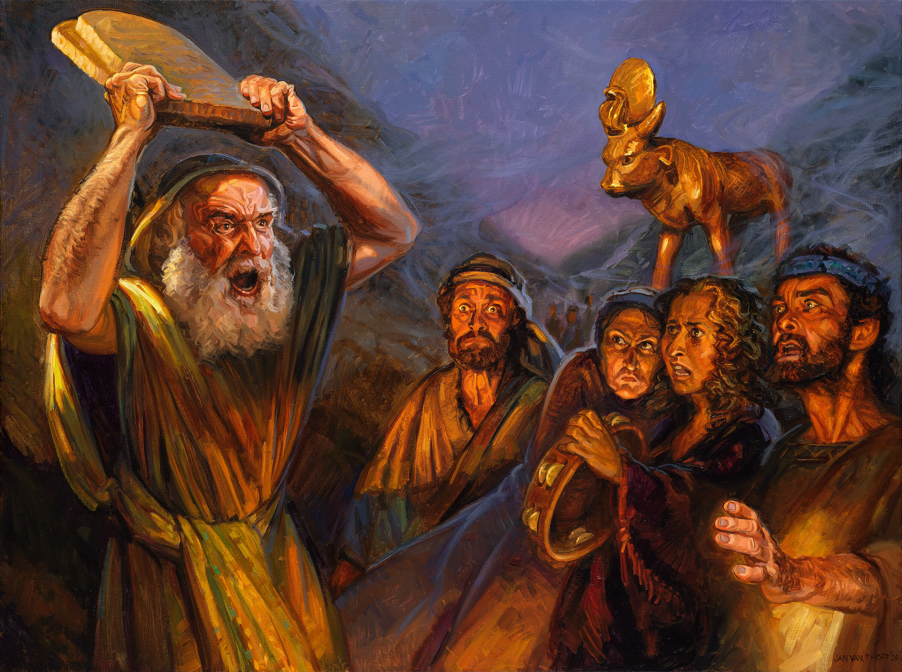

不可为自己雕刻偶像

复习

十诫的福音序言
- 我是耶和华，你的上帝，曾将你从埃及地为奴之家领出来。
- 除了我以外，你不可有别的神。
神是个灵
- 上帝是个灵（约4:24）,因此任何用创造物来描述上帝都是对祂的亵渎
- 想象一下，要如何用图像来描述以下的概念？
- 1. 一
- 3. 爱
- 2. 存在

.svg.png)
神是个灵
- 就像是一个画家尝试用动物的形象去描绘一个君王
- 用任何创造物来描述神，是无视神的无限性，从而造成亵渎的罪